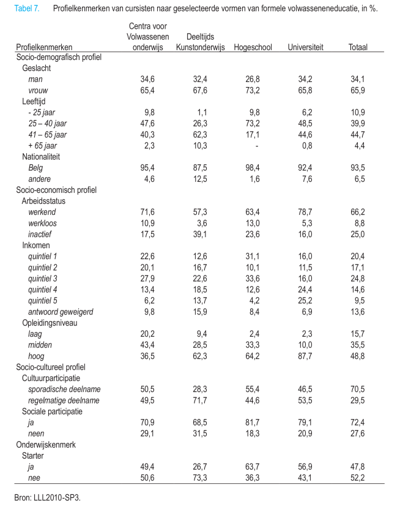
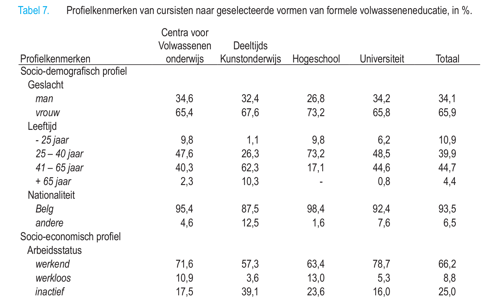
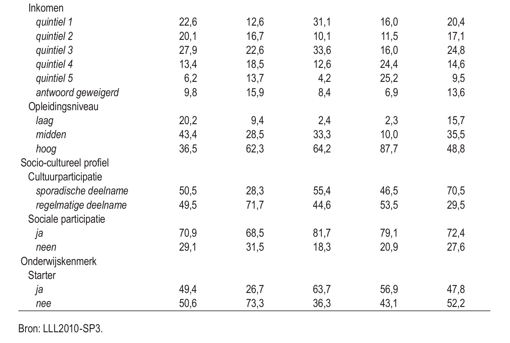
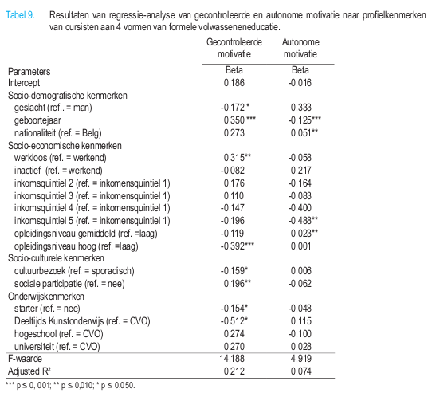

- Van Petegem, P., & Imbrecht, I. (2012). Organisatie Volwassenenonderwijs.
- Boeren, E., & Nicaise, I. (2009). Wie neemt deel en waarom?
- Knowles (2005). An andragogical process model for learning. (H6 Knowles)
- Knowles (2005). Andragogy in practice. (H7 Knowles)
- Jarvis, P. (2010). Perspectives on learning theory. (H5 Jarvis)
Planning lessen (vrijdagvoormiddag)
- 17 feb: Les 1
- 14 feb: Les 2
- 03 mrt: Les 3
- 10 mrt: Les 4
- 17 mrt: geen les
- 24 mrt: geen les
- 31 mrt: Les 5
|
- 07 apr: geen les
- 14 apr: geen les
- 21 apr: Les 6
- 28 apr: Les 7
- 05 mei: Les 8
- 12 mei: Les 9
- 19 mei: Les 10*
|
Adult Learning and Education

Elementen van de opdracht
- Schrijf samenvatting van het artikel/hoofdstuk
- Gebruik template (zie minerva)
- Maak een presentatie voor de groep
- Gebruik webslides of template (zie minerva)
- Layout mag anders, gebruik zelfde elementen
- Maximum 10 minuten (5 elk)
https://docs.google.com/spreadsheets/d/1Qbf3gkJRhKhqVaCNfjnd_m1leJT4SPa2zq5MGJQmO3w/edit?usp=sharing
request access
https://docs.google.com/spreadsheets/d/1Qbf3gkJRhKhqVaCNfjnd_m1leJT4SPa2zq5MGJQmO3w/edit?usp=sharing
Opdracht was
- Lees Boeren & Nicaise (2009)
- Boeren, E., & Nicaise, I. (2009). 'Onderwijs voor volwassenen: wie
neemt deel en waarom? In L. Vanderleyden, M. Callens, & J.
Noppe, De sociale staat van Vlaanderen 2009 (pp. 315-330).
Brussel: Studiedienst van de Vlaamse Regering.
- Abstract + kern + kritische bespreking
Leesopdracht
- Formeel volwassenenonderwijs: Wie neemt deel en waarom
- Wie
- Profiel
- Waarom
- Autonome motivatie
- Gecontroleerde motivatie
Tabel 7: profielkenmerken

Tabel 7: profielkenmerken

Tabel 7: profielkenmerken

Socio-demografisch
- Vrouwen
- 25 tot 40 jarigen (behalve deeltijds kunstonderwijs)
- Niet-Belgen: nuanceren (NL in kunstonderwijs en universiteiten, weinig in hogeschool, NL-talige vragenlijst)
Socio-economisch
- Werkenden
- Meer dan inactieven
- Meer dan werklozen
- Vooral hooggeschoolden (behalve CVO’s)
- Mattheüseffect
- Wie reeds een diploma hoger onderwijs behaald heeft, neemt 2 à 3 maal meer deel aan een educatieve activiteit
Socio-cultureel
- Ong. fifty – fifty m.b.t. cultuurparticipatie (met uitzondering van deeltijds kunstonderwijs)
- Meer sociaal actieven (2/3 tot over 3/4)
Starters
- Hangt af van de instellingen
- Tertiar: meer starters
- CVO: ongeveer de helft
- Deeltijds kunstonderwijs: iets meer dan een kwart
- Opgelet: verschil in structuur en duur van de opleidingen
Algemeen
- Absolute cijfers: meer 41 tot 65-jarigen (verschil met de relatieve/gewogen cijfers)
- 1 op 4 is inactief
- Bijna de helft is hoog opgeleid
Gecontroleerde motivatie
- Meer gecontroleerd gemotiveerd zijn:
- Mannen
- Jongere deelnemers
- Werklozen
- Laag opgeleiden (enkel vs. hoog)
Gecontroleerde motivatie
- Meer gecontroleerd gemotiveerd zijn:
- Sporadische cultuurbezoekers
- Sociaal actieven
- Niet-starters (dus wie langer bezig is)
- Niet-deeltijds kunstonderwijs (dus wie naar CVO of universiteit/hogeschool gaat)
Autonome motivatie
- Meer autonoom gemotiveerd zijn:
- Vrouwen
- Oudere deelnemers
- Laag inkomen (enkel t.o.v. hoogste)
- [gemiddeld opleidingsniveau]
- Opgelet: R² = 0.074
Tabel 9: resultaten regressieanalyse
